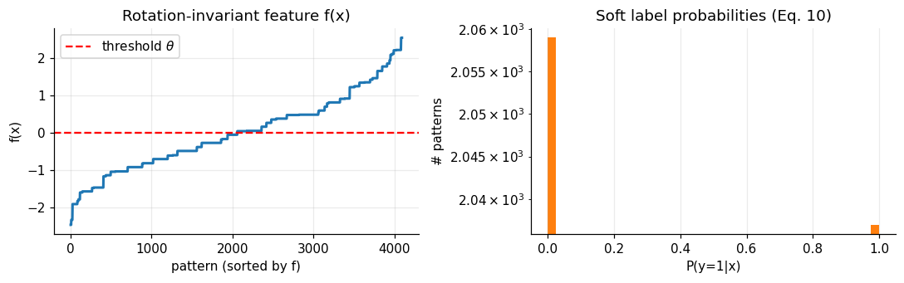
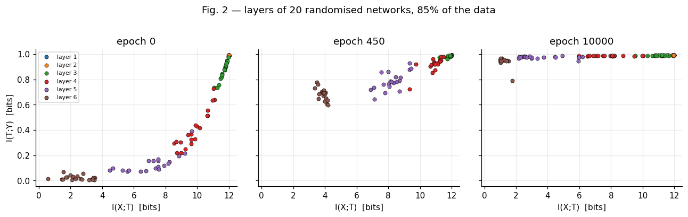

Directly present in notebook code, cached output, or exported figures.
REPRODUCTION SCOPE
One evidence base, four levels of scientific confidence
The notebook and its saved outputs determine what is reported here. Original-paper claims are comparison targets, not results that are forced into the reproduction.
Computed from verified arrays, such as peak-to-end information loss or an SNR crossing.
A technically plausible explanation presented with an explicit evidence boundary.
Not claimed as a result; for example, universal continuous-representation compression.
INFORMATION-THEORETIC FOUNDATIONS
The information plane compares unlike layers in the same units
Entropy, H(X) = −Σx p(x) log2p(x), measures uncertainty in bits. The horizontal coordinate asks how much a quantized representation retains about the input; the vertical coordinate asks how much it retains about the label.
For the Markov chain Y → X → T1 → ··· → TL, data processing constrains information across layers at a fixed network state. It does not require information to decrease monotonically across epochs because the learned mappings change during training.
I(X;T) = H(T)for deterministic, quantized codes in this estimator
I(T;Y) = H(Y) − H(Y|T)label information preserved by a representation
LIB = I(X;T) − βI(T;Y)compression–prediction trade-off
θk+1 = θk − ηĝkplain mini-batch SGD update
Estimator boundary. The notebook bins whole-layer activation vectors. A drop in this binned estimate is not automatically an equal drop in the mutual information of the underlying continuous activations.

VERIFIED IMPLEMENTATION
From all binary inputs to saved layerwise information
The main result uses one declared long preset. No browser-side retraining occurs; this site reads the exact saved checkpoints exported from that run.
Dataset
Enumerate all 212 = 4,096 binary patterns. A rotation-invariant soft rule yields I(X;Y) = 0.990 bits.
Network
Apply affine maps and tanh nonlinearities in a 12–10–7–5–4–3–2 architecture, ending in a two-way softmax.
Optimization
Train 20 independently initialized networks for 10,000 epochs using cross-entropy, manual NumPy backpropagation, η = 0.05, and batch size 1,024.
Measurement
Evaluate every checkpoint over all 4,096 patterns; quantize whole-layer activation vectors into 30 bins and estimate discrete entropies.
Xaffine + tanhT1···T6softmaxŶ
EXACT SAVED LONG-PRESET FRAMES
Follow the 20-network ensemble through training
Move the slider in either direction, press Play, and click a legend item to isolate a layer. Every plotted point is a recorded checkpoint from the team-submitted notebook; no intermediate values are invented.
Information planesmall points are individual networks; diamonds are layer means
epoch0
saved checkpoint1 / 119
driftepoch 84diffusion and compression
Recorded snapshots only. Playback advances through 119 saved checkpoints. Line segments connect consecutive observations for readability; they are not additional measurements.
Input information by layer
I(X;T) across the saved epochs
Gradient signal-to-noise ratio
the transition occurs where the geometric mean falls below 1
PAPER FIGURES AND TWO CONTROLS
What the long-preset run found
Select a result to see its submitted figure, numerical result, and the limit on what we can conclude.

PAPER FIGURE 2
Fitting followed by compression
Interpretation boundary
DYNAMIC REPRODUCTION RESULTS
Seven experiment trajectories
These MP4s turn the saved experimental checkpoints into readable motion. The measured checkpoints are experimental evidence; smooth transitions between them are visual interpolation.
FIGURE 2
Information-plane trajectory
Follows each hidden layer through fitting and the later leftward motion measured by the binned estimator.
FIGURE 3
Training-fraction comparison
Compares how the representations evolve when the network is trained with different fractions of the available patterns.
FIGURE 4
Gradient drift and diffusion
Shows the gradient signal-to-noise transition used to distinguish the early drift regime from the fluctuation-dominated regime.
FIGURE 5
Network-depth comparison
Visualizes how learning speed and the final information-plane positions change across networks of different depths.
FIGURE 6
Information Bottleneck frontier
Compares measured converged layer endpoints with the declared approximate IB frontier while keeping the evidence boundary visible.
FIGURE 7
Sample-size trajectory
Shows how increasing the training sample changes the predictive information retained by the learned representation.
FIGURE 8
Alternative-rule trajectory
Tests whether the same broad information-plane phases appear for the second synthetic decision rule and student architecture.
CLAIM SCORECARD
Results do not receive a single yes-or-no label
The long run supports the central qualitative picture while qualifying the depth and estimator claims.
ClaimResultEvidence
Two SGD phasesQUALITATIVELY REPRODUCED
SNR starts at 3.97 and crosses below 1 at epoch 84. The committee-rule run crosses at epoch 75.
Compression dominates trainingDEEPER LAYERS SUPPORTED
99% of epochs occur after the transition. Layers 3 to 6 lose 0.8 to 5.0 bits after epoch 84.
Layers approach the IB boundLARGELY REPRODUCED
Mean vertical gap is 0.010 bits, but the wide layers still contain about 10 excess input bits.
Depth reduces training timePARTLY REPRODUCED
One to three hidden layers gives a 2.9x speed-up. Improvement then saturates and is not monotone.
LIMITATIONS
What the experiment cannot establish
- 01
Generalization gapThe output ends at I(T;Y) = 0.943 of the available 0.990 bits because training uses 85% of the patterns while evaluation uses all 4,096.
- 02
Unreported hyperparametersThe paper does not fully specify learning rate and batch size. The submitted run tunes these values to expose a drift phase.
- 03
Estimator dependenceAbsolute I(X;T) values and the compression of wide layers change with the bin count. ReLU also requires a changing activation range.
- 04
Scale and ensemble sizeThe run uses a small synthetic task, 20 networks rather than 50, and one declared random seed.
- 05
Critical slowing downThe paper presents this as a conjecture. The submitted experiment does not test it.
REFERENCE
Shwartz-Ziv, R., & Tishby, N. (2017). Opening the black box of deep neural networks via information. arXiv:1703.00810v3. https://arxiv.org/abs/1703.00810